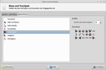
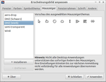

Mauszeiger
Dieser Artikel wurde für die folgenden Ubuntu-Versionen getestet:
Ubuntu 14.04 Trusty Tahr
Zum Verständnis dieses Artikels sind folgende Seiten hilfreich:
Dieser Artikel beschäftigt sich mit dem Mauszeiger (engl.: "(mouse) cursor" oder "(mouse) pointer"), Mauszeiger-Designs oder -Themen (themes) und wie man sie wechseln kann. Mauszeiger werden unter Linux vom jeweiligen XServer über die XCursor-Bibliotheken geladen.
XCursor benutzt dabei ein bestimmtes Format, innerhalb dessen die Mauszeiger zu einem Design (Theme) gebündelt werden und über das Alternativen-System ausgewählt werden können. Bei den meisten Desktop-Umgebungen gibt es grafische Hilfen, um ein Mauszeiger-Thema zu wechseln.
Thema installieren¶
Einige Themen können aus den offiziellen Paketquellen installiert [1] werden:
xcursor-themes
comixcursors, universe
chameleon-cursor-theme, universe
crystalcursors, universe
dmz-cursor-theme, universe
oxygen-cursor-theme, universe
oxygen-cursor-theme-extra, universe
Manuell¶
Wenn man ein Thema von Hand installieren möchte, muss man es nur entpacken [2] und den entpackten Ordner:
für eine Benutzerinstallation nach ~/.icons/ oder
für eine systemweite Installation mit Root-Rechten [3] nach /usr/share/icons/
kopieren. Ein typisches Thema besitzt einen Unterordner cursors und eine Datei mit dem Namen index.theme, in der der jeweilige Name des Themas zu finden ist (dieser wird z.B. bei der Konfiguration über die Kommandozeile benötigt).
Weitere Designs können zum Beispiel auf:
gefunden werden (diese Themen funktionieren alle auch mit LXDE/MATE/Cinnamon).
Thema wechseln¶
Hinweis:
Nach jeder Änderung ist ein Neustart des XServers erforderlich, damit die Einstellungen wirksam werden. Alternativ ab- und wieder neu anmelden.
Unity¶
Ab Ubuntu 11.10 sind normalerweise die GNOME3 Systemeinstellungen zuständig - die aber kein entsprechendes Werkzeug zur Verfügung stellen. Daher muss man auf die Lösungen für die Kommandozeile ausweichen (siehe unten) oder das externe Werkzeug Unity Tweak Tool  nutzen.
nutzen.
unity-tweak-tool (universe, ab Ubuntu 14.04)
 mit apturl
mit apturl
Paketliste zum Kopieren:
sudo apt-get install unity-tweak-tool
sudo aptitude install unity-tweak-tool
Dort kann man unter "Unity Tweak Tool -> Mauszeiger" den Mauszeiger anpassen.
KDE Plasma¶
Unter KDE Plasma kann man über ein grafisches Menü das Mauszeigerthema ändern. Je nach KDE-Version findet man den Dialog im Anwendungsmenü unter:
 "Rechner -> Systemeinstellungen -> Erscheinungsbild der Arbeitsfläche -> Zeigerdesigns" (ab KDE SC 4.5)
"Rechner -> Systemeinstellungen -> Erscheinungsbild der Arbeitsfläche -> Zeigerdesigns" (ab KDE SC 4.5)- "Rechner -> Systemeinstellungen -> Systemverwaltung -> Tastatur & Maus" (vor KDE SC 4.5)
MATE¶
Unter MATE kann man mit einem grafischen Menü das Mauszeigerdesign ändern:
"System -> Einstellungen -> Erscheinungsbild -> Thema -> Anpassen -> Zeiger"

Xfce¶
Bei der Desktop-Umgebung Xfce kann man das Mauszeigerthema über
 "Einstellungen -> Maus und Touchpad -> Mausthema"
"Einstellungen -> Maus und Touchpad -> Mausthema"
ändern. Details finde sich im Artikel Xfce Themes.

LXDE¶
Unter LXDE bzw. Lubuntu kann LXAppearance genutzt werden, um das Mauszeigerthema zu ändern. Zu finden ist das Programm im Anwendungsmenü über:
 "Einstellungen -> Erscheinungsbild anpassen"
"Einstellungen -> Erscheinungsbild anpassen"
Dann wählt man den Menüpunkt "Mauszeiger". Da LXDE keinen Dialog zum Ändern der Größe besitzt, muss man diese bei Bedarf manuell konfigurieren.
Terminal¶
Der Mauszeiger kann auch mit Hilfe der Kommandozeile [4] geändert werden.
Alternativen-System¶
Zuerst sei dafür das Alternativen-System genannt, mit welchem man den Mauszeiger global festlegen kann. Dies geht im Terminal mit dem Befehl:
sudo update-alternatives --config x-cursor-theme
Als Ausgabe erhält man nun eine Liste mit den Themen, die man installiert hat:
Es gibt 6 Alternativen, die »x-cursor-theme« bereitstellen.
Auswahl Alternative
-----------------------------------------------
1 /etc/X11/cursors/handhelds.theme
2 /etc/X11/cursors/core.theme
3 /etc/X11/cursors/redglass.theme
* 4 /etc/X11/cursors/whiteglass.theme
5 /etc/X11/cursors/crystalgreenleft_nonanim.theme
6 /etc/X11/cursors/crystalgreenleft_classic.theme
Drücken Sie die Eingabetaste, um die Vorgabe[*] beizubehalten, oder geben Sie die Auswahlnummer ein:Durch Eingabe der gewünschten Zahl und Bestätigen mit ⏎ kann man das gewünschte Mauszeiger-Design umstellen. Möchte man ein manuell heruntergeladenes Thema als System-Standard verwenden, muss dieses:
Mit Root-Rechten in den Ordner /usr/share/icons/ kopiert und
Ein neuer Eintrag im Alternativen-System erstellt werden
bevor man dieses auf diesem Weg konfigurieren kann.
icons/default/¶
Eine weitere Möglichkeit, das Mausthema auszuwählen, besteht darin, einen Ordner default zu erstellen:
~/.icons/default/ - pro Benutzer
/usr/share/icons/default/ - systemweit, mit Root-Rechten
In diesem Ordner erstellt man nun die Datei index.theme mit folgendem Inhalt [5]:
[icon theme] Inherits=THEMENNAME
Damit wird das Thema mit dem Namen THEMENNAME eingebunden (inherits=) und als Standard festgelegt.
.XResources¶
Als dritte Variante kann man ein Mauszeiger-Thema auch durch Ressource-Dateien einstellen. Dabei lauten die Optionen:
Xcursor.theme: THEMENNAME ! der Name des Mauszeiger-Themas Xcursor.size: 32 ! 32, 48 oder 64 sind gute Werte für die Größe (Voreinstellung: 24)
Bei der Größe kann man zwischen verschiedenen Pixel-Größen wählen – aber nur, wenn das Thema auch mehrere Größen enthält. Wenn man die Zeile mit Xcursor.size: weglässt, wird die Größe automatisch gewählt.
Problembehebung¶
Größe des Mauszeigers¶
Aufgrund von Beschränkungen des XServers kann der Mauszeiger nicht beliebig skaliert werden. Verschiedene Größen sind nur möglich, wenn diese bereits im jeweils verwendeten Design enthalten sind. Wenn aufgrund einer Beeinträchtigung des Sehvermögens ein besonders großer oder auffälliger Mauszeiger gewünscht ist, sollte man sich auf die Suche nach entsprechenden Themen machen. Beispiele: Win8E oder Rare Aero W7 .
Mauszeigerthema nicht in allen Anwendungen¶
Es kann vorkommen, dass das Mauszeigerthema sich nicht in allen Anwendungen zeigt. Am besten ist es, das Mauszeigerthema wie oben beschrieben über das Alternativen-System zu ändern und dann einen symbolischen Link anzulegen:
sudo ln -s /etc/alternatives/x-cursor-theme /usr/share/icons/default/index.theme
Außerdem sollte man darauf achten, dass in der Datei ~/.icons/default nichts anderes eingetragen ist als im Alternativen-System.
Alternative Herangehensweise¶
Das (entpackte) Themen-Verzeichnis mit Root-Rechten nach /usr/share/icons/Mein-neues-Maus-Thema kopieren. Dann mittels eines Editors mit Root-Rechten in der Datei /usr/share/icons/default/index.theme den Eintrag entsprechend abändern:
Vorher:
[Icon Theme] Inherits=Hier-steht-das-alte-Mausthema
Nachher:
[Icon Theme] Inherits=Mein-neues-Maus-Thema
Anschließend das Thema (nochmal) auswählen.
- Erstellt mit Inyoka
-
 2004 – 2017 ubuntuusers.de • Einige Rechte vorbehalten
2004 – 2017 ubuntuusers.de • Einige Rechte vorbehalten
Lizenz • Kontakt • Datenschutz • Impressum • Serverstatus -
Serverhousing gespendet von